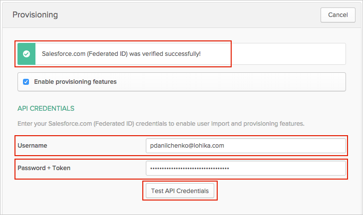
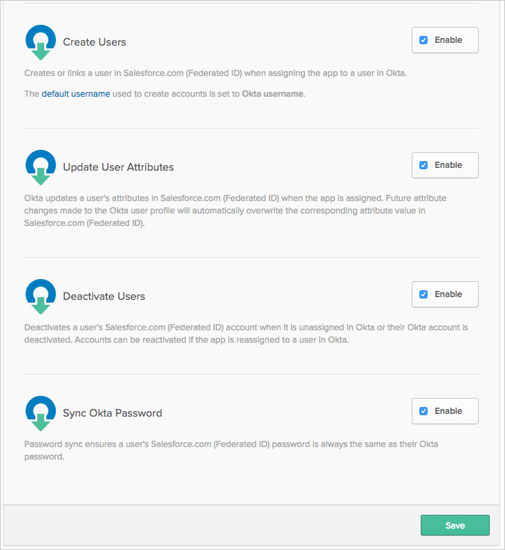
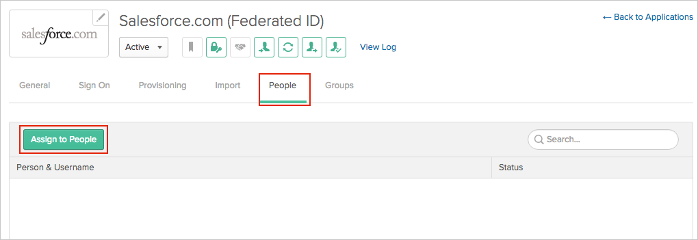
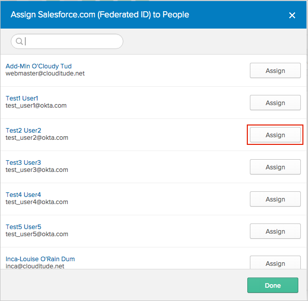
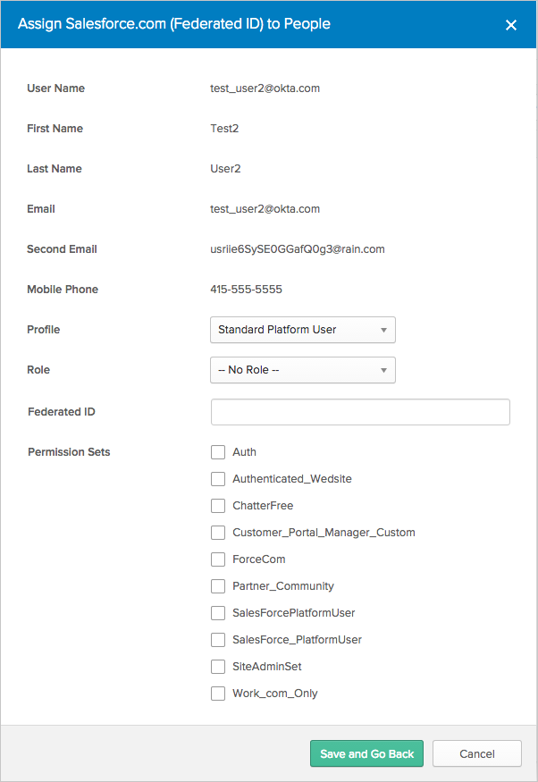
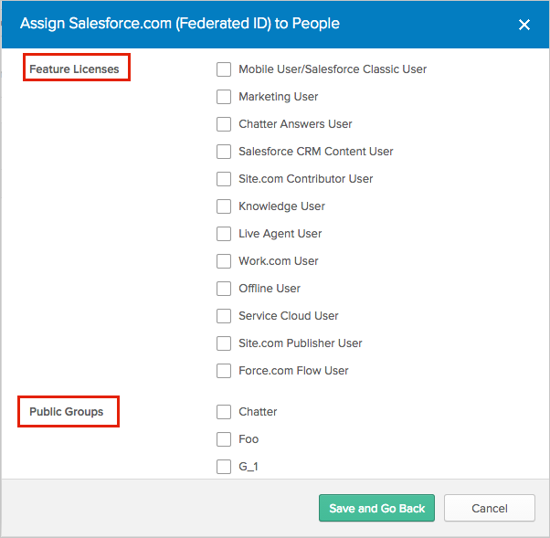
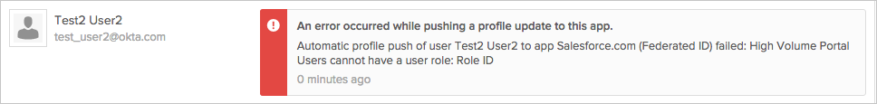
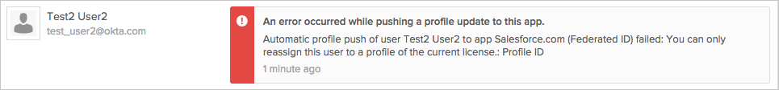
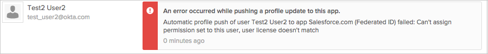

This guide provides the steps required to configure Provisioning for Salesforce Federated ID.
Import New Users
Import Profile Updates
Push New Users
Push Profile Updates
Push User Deactivation
Sync Okta Password
Profile Mastering
Complete the following before you configure provisioning for Salesforce Federated ID:
Create an administrator account in Salesforce. You use this account’s username and password to configure the Salesforce Federated ID app in Okta. When you create an administrator account, Salesforce will then provide you a token.
Note: Every time you reset this account’s password, Salesforce will provide you with a new token, and you need to edit the Salesforce app’s Provisioning settings in Okta using the new password/token as described below. See TIPS.
You are now ready to configure your Provisioning settings as follows:
In the API Credentials section, enter the Username, Password and Token associated with your Salesforce Administrator account.
Note: Simply append the token Salesforce provided to you to your password, no spaces or other characters.
Click Test API Credentials; if successful, a verification message appears at the top of the screen, as shown below:

Scroll down and specify the type of Provisioning Features you want to enable:

Click Save.
To assign users to the Salesforce Federated ID app:

Then, in the Assign Salesforce Federated ID to People dialog, select a user, then click the Assign button:

You can set the Profile, Role, Federation ID and Permission Sets for each user:

If you would like to enable support for Feature Licenses and Public Groups for Salesforce, contact Okta Support and ask them to enable it for your organization.
When Okta Support has enabled that functionality for you, you need to create and configure a new Salesforce Federated ID application in order to work with the new user attributes.
This is a known limitation.
You can manage Feature Licenses and Public Groups for users by enabling the corresponding checkboxes on the User Assignment page.
Note that Feature Licenses depend on the selected user Profile. If you select a Feature License that is not supported by the selected Profile you will encounter an error, as described in Troubleshooting Tips.

Error when a user has a License (for example, High Volume Portal Users) which does not have any roles in it:

Error when you try to assign Profile to a user that does not exist in License:

Error when you try to assign a permission set to the user with a License that doesn't support the permission set.
